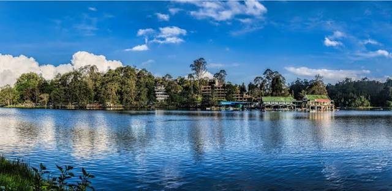
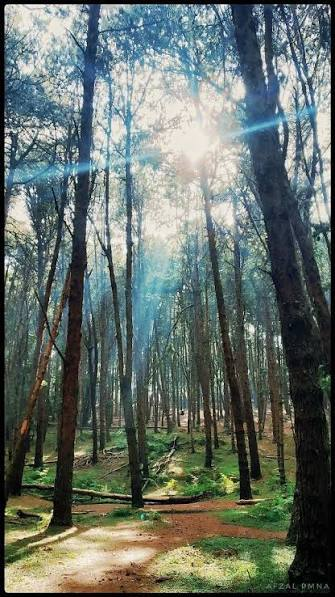
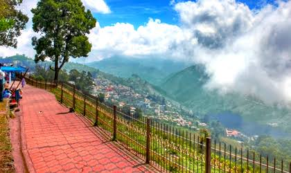

Kodaikanal is a serene hill station nestled in Tamil Nadu, surrounded by misty mountains, pine forests, and charming valleys.

A star-shaped artificial lake located in the heart of the town.

A dense forest of tall, towering pine trees perfect for peaceful walks.

A narrow pedestrian path offering scenic views of plains and mountains.
I love Kodaikanal for its cool climate, tall pine trees, and lovely walking tracks.